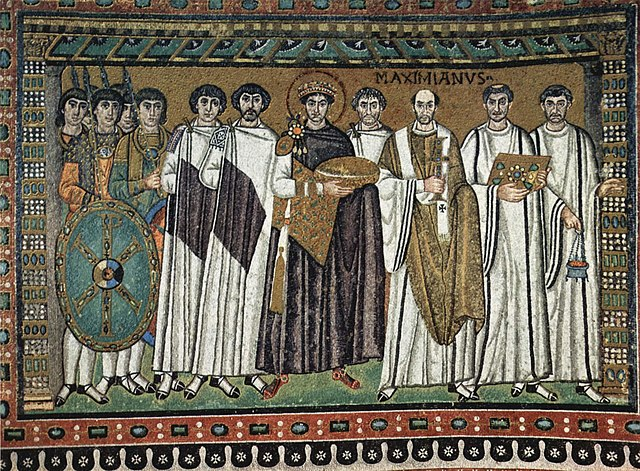
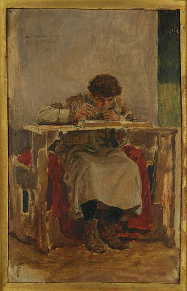
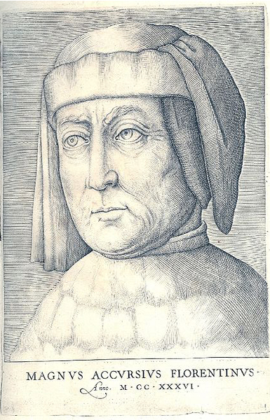
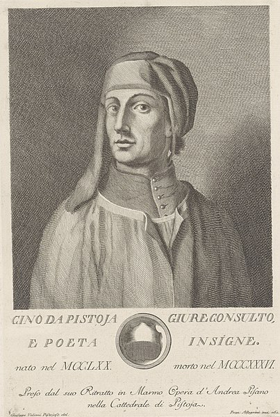
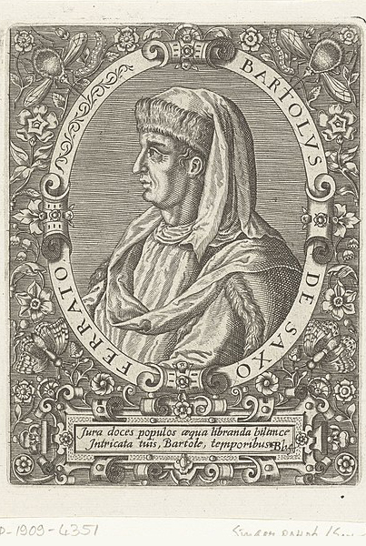
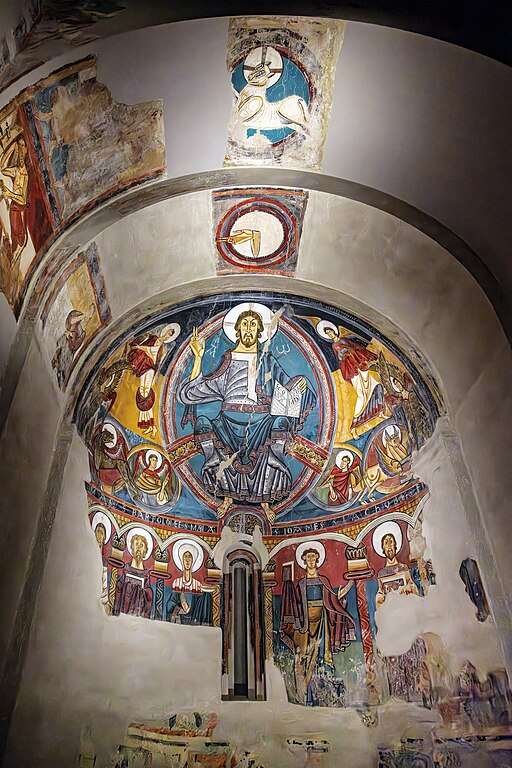
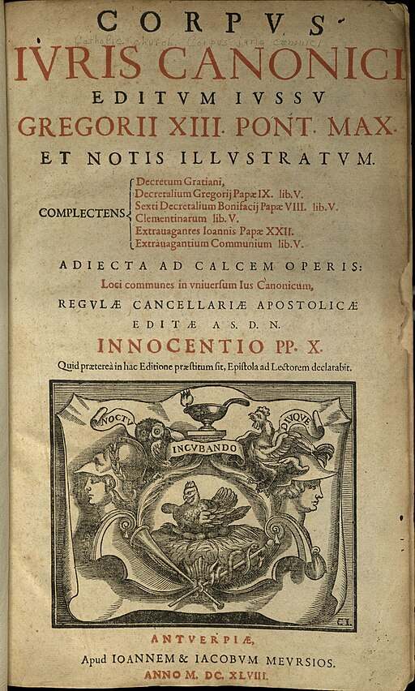

Ius commune
A finales del siglo XI, ante la necesidad de crear una cultura jurídica que regule y legitime las relaciones económicas, políticas y sociales, se unificaron diferentes códigos que darían a Europa una dogmática jurídica conocida como Ius communeo Derecho Común (Fernández, 2003).
El concepto de ius commune es el resultado del estudio e interpretación del Derecho Justiniano (Corpus Iuris Civilis) y el Derecho Canónico (Corpus Iuris Canonici) adaptados al Derecho Feudal de las diversas localidades y reinos.
Derecho Justiniano Corpus Iuris Civilis

El emperador bizantino Justiniano. Imagen de Eloquence, Wikimedia Commons.
En la Universidad de Bolonia, el Derecho se convirtió en un saber autónomo cuya base de estudio fueron los escritos del Derecho Justiniano. La recepción de la jurisprudencia romana se aceptó como canon metodológico para el conocimiento y aplicación del Derecho, puesto que estas leyes fueron creadas para una sociedad urbana y se han adaptado (hasta nuestros tiempos) a las nuevas condiciones de vida.
Como recordarás de la pantalla anterior, la compilación realizada bajo el mandato de Justiniano (s. VI), incluye temas como:
- Las personas
- Familia
- Propiedades y herencias
- Obligaciones
El jurista Irnerio y sus discípulos, asumieron la tarea de analizar y explicar los textos del Corpus Iuris Civilis. Su función era escribir breves aclaraciones en los márgenes de cada pasaje o norma para una mejor comprensión de la misma. Estas aclaraciones se conocen como Glosa y quienes las escribieron se denominaron glosadores. En el siglo XIII, Accursio organizó y recopiló la mayor parte de las glosas escritas por sus predecesores en la célebre Magna Glossa.

Glosador Irineo. Imagen de Rabanus, Wikimedia Commons.

Accursio. Imagen de BotMultichillT, Wikimedia Commons.
Durante el siglo XIV terminó la labor de los glosadores y surgieron los comentaristas, quienes emplearon una nueva metodología que poniendo en práctica el trabajo teórico de los primeros.
Los textos fueron instrumentos para resolver problemas a casos locales y territoriales. Cino da Pistoia y Bártolo de Sassoferrato fueron juristas y comentaristas destacados.

Cio da Pistoa. Imagen de N.Puget, Wikimedia Commons.

Bártolo de Sassoferrato. Imagen de Mr.Nostalgic, Wikimedia Commons.
Derecho canónico Corpus Iuris Canonici
La Iglesia mantuvo la unión entre cristianos formando un orden universal bajo su autoridad. El cristianismo considera que todos son iguales ante Dios y aportó el valor de la dignidad humana, la piedad y la caridad, así como la protección hacia los más desposeídos. Se apoyó en las leyes romanas, en los principios del matrimonio, el cuidado de la esposa e hijos, la heredad, acuerdos en transacciones jurídicas y la persecución de actos considerados delictivos por atentar contra la moral cristiana. Estas actividades contribuyeron a debilitar el imperio romano y lograron que la Iglesia fuera la única institución que se mantuvo ante la desfragmentación europea.

El Pantocrátor. Imagen de Archaeodontosaurus, Wikimedia Commons.
El Derecho canónico se divide en dos partes:
Las leyes divinas: Emanan directamente de Dios. Fueron reveladas al hombre por medio de las Sagradas Escrituras (La Biblia), en el Antiguo y Nuevo Testamento.
Las leyes terrenales: provenientes del clero siendo el Papa la autoridad máxima que otorga las leyes universales o pontificas del cristianismo. A su vez, el clérigo de rango menor tenía la autoridad de decretar leyes para la iglesia y el territorio donde se encontraban. Algunas de las regulaciones de la Iglesia fueron la coronación de reyes, contratos territoriales, donaciones, legados, intervención por la familia etc.
Así como sucedió con la recopilación de las leyes romanas, los eclesiásticos se encargaron de recopilar las leyes de la Iglesia. Durante el siglo XI, bajo la autoridad del Papa Gregorio VII, se produjeron las Reformas Gregorianas para unificar el derecho canónico. De ahí surgieron los glosadores canónicos que recopilaron los cánones o decretos eclesiásticos y los glosadores decretistas encargados de los decretos del papado. Estas disposiciones quedaron integradas en el Corpus Iuris Canonici llamado así para distinguirse del Justiniano (Bernal, 2010 y Sedano, 2014).

Código Canónico. Imagen de Ratte, Wikimedia Commons.
El Derecho canónico ha sido influencia en el derecho actual, mira el siguiente video:
El derecho canónico en nuestra sociedad actual.
Derecho Feudal Libri Feudorum
Se define como el conjunto de derechos y obligaciones que se establecieron por costumbre entre señores y vasallos. El ius commune se adaptó en la práctica a las leyes de cada zona o reino. El señor feudal recibía tierras o aldeas, por parte de la autoridad máxima, el rey, con la finalidad de darle protección a éste de administrar y legislar el territorio dado. Los feudos eran terrenos con sembradíos para el autoconsumo y una fortaleza o castillo que protegían la zona.
Las obligaciones de los nobles vasallos consistía en proteger los feudos, ya sea como caballeros o guardias, mientras que vasallos de menor rango debían trabajar en la agricultura, ganadería y construcción, así como pagar impuestos por el uso de las tierras y herramientas. Los derechos del vasallo eran tener familia (que heredaba la deuda con el señor feudal), vivir en las villas y recibir protección por parte de su señor.
Revisa el siguiente video.
Ius Commune y código Napoleónico
A continuación realiza el siguiente ejercicio.